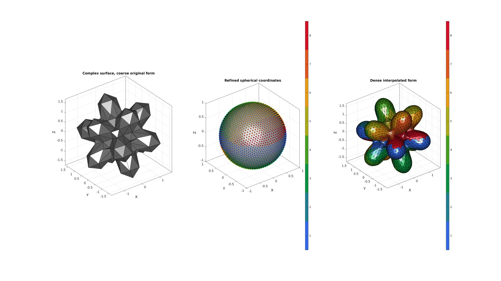

interp_spherical
Below is a demonstration of the features of the interp_spherical function
Contents
Syntax
[Ri,Ci]=interp_spherical(T,P,R,Ti,Pi,interpMethod,numberInterpSteps);
Description
The function interp_spherical interpolates in a spherical coordinate sytem using standard interp2 type interpolation methods or those based on Delaunay tesselations in the angular space such as natural neighbour interpolation method. Standard spherical interpolation of this type creates artifacts at the poles. Hence interp_spherical splits the interpolation up into a number of steps (set by numberInterpSteps). The function aims to interpolate at the "equator" such that polar artifacts can be minimized. For each interpolation step the interpolation problem is rotated such that the currect "equatorial band" is centered at the equator.
Examples
clear; close all; clc;
Example: Interpolating data in spherical coordinates
Plot settings
fontSize=15;
Simulating sparse sampling of complex spherical function. A triangulated representation is constructed allowing for surface visualization. This is however not required.
numRefine1=2; %Number of refinement steps from icosahedron r=2; %Inner sphere radius [F,V,~]=geoSphere(numRefine1,r); [~,V2,~]=geoSphere(0,r); [D,indMin]=minDist(V,V2); D=D.^2; D=D-min(D(:)); D=D./max(D(:)); D=D.*r; [T,P,R] = cart2sph(V(:,1),V(:,2),V(:,3)); R=R-0.6*D; [V(:,1),V(:,2),V(:,3)] = sph2cart(T,P,R); [T,P,R] = cart2sph(V(:,1),V(:,2),V(:,3)); %Get spherical coordinates
Defining denser point set for interpolation
numRefine2=numRefine1+2;
[Fi,Vs,Vsi]=geoSphere(numRefine2,1);
Ti=Vsi(:,1); Pi=Vsi(:,2); %Get spherical coordinates
Interpolate in spherical coordinates
numberInterpSteps=8; %Number of interpolation steps ("equitorial bands") interpMethod='cubic'; %The interpolation method %Spherical interpolation [Ri,Ci]=interp_spherical(T,P,R,Ti,Pi,interpMethod,numberInterpSteps); %Convert to Cartesian coordinates [Vi(:,1),Vi(:,2),Vi(:,3)]=sph2cart(Ti,Pi,Ri); %Plotting results cFigure; subplot(1,3,1); hold on; grid on; view(3); title('Complex surface, coarse original form','FontSize',fontSize); gpatch(F,V,0.5*ones(1,3),'k'); axisGeom(gca,fontSize); camlight('headlight'); ha=axis; subplot(1,3,2); hold on; grid on; view(3); title('Refined spherical coordinates','FontSize',fontSize); gpatch(Fi,Vs,0.8*ones(1,3),'k'); h1=scatter3(Vs(:,1),Vs(:,2),Vs(:,3),35,Ci,'filled'); colormap(gca,gjet(numberInterpSteps)); icolorbar([1 8]); axisGeom(gca,fontSize); camlight('headlight'); subplot(1,3,3); hold on; grid on; view(3); title('Dense interpolated form','FontSize',fontSize); gpatch(F,V,0.5*ones(1,3),'none',0.1); h2=gpatch(Fi,Vi,Ci,'k'); axisGeom(gca,fontSize); colormap(gca,gjet(numberInterpSteps)); icolorbar([1 8]); camlight('headlight'); axis(ha); drawnow;
Animate the process
hf=cFigure; subplot(1,3,1); hold on; grid on; view(3); title('Complex surface, coarse original form','FontSize',fontSize); gpatch(F,V,0.5*ones(1,3),'k'); axisGeom(gca,fontSize); camlight('headlight'); ha=axis; subplot(1,3,2); hold on; grid on; view(3); title('Refined spherical coordinates','FontSize',fontSize); gpatch(Fi,Vs,0.8*ones(1,3),'k'); h1=scatter3(Vs(:,1),Vs(:,2),Vs(:,3),35,Ci,'filled'); colormap(gca,gjet(numberInterpSteps)); icolorbar([1 8]); axisGeom(gca,fontSize); camlight('headlight'); subplot(1,3,3); hold on; grid on; view(3); title('Dense interpolated form','FontSize',fontSize); gpatch(F,V,0.5*ones(1,3),'none',0.1); h2=gpatch(Fi,Vi,Ci,'k'); axisGeom(gca,fontSize); colormap(gca,gjet(numberInterpSteps)); icolorbar([1 8]); camlight('headlight'); axis(ha); drawnow;

Add animation component based on anim8 to visualize stepwise process
animStruct.Time=linspace(0,1,numberInterpSteps+1); Cn=nan(size(Ri)); Rn=ones(size(Ri)); for q=1:1:numberInterpSteps+1 if q==1 [Vn(:,1),Vn(:,2),Vn(:,3)]=sph2cart(Ti,Pi,Rn); else Rn(Ci==q-1)=Ri(Ci==q-1); [Vn(:,1),Vn(:,2),Vn(:,3)]=sph2cart(Ti,Pi,Rn); Cn(Ci==q-1)=Ci(Ci==q-1); end %Set entries in animation structure animStruct.Handles{q}=[h1,h2,h2]; %Handles of objects to animate animStruct.Props{q}={'CData','Vertices','CData'}; %Properties of objects to animate animStruct.Set{q}={Cn,Vn,Cn}; %Property values for to set in order to animate end anim8(hf,animStruct);

GIBBON www.gibboncode.org
Kevin Mattheus Moerman, gibbon.toolbox@gmail.com
GIBBON footer text
License: https://github.com/gibbonCode/GIBBON/blob/master/LICENSE
GIBBON: The Geometry and Image-based Bioengineering add-On. A toolbox for image segmentation, image-based modeling, meshing, and finite element analysis.
Copyright (C) 2019 Kevin Mattheus Moerman
This program is free software: you can redistribute it and/or modify it under the terms of the GNU General Public License as published by the Free Software Foundation, either version 3 of the License, or (at your option) any later version.
This program is distributed in the hope that it will be useful, but WITHOUT ANY WARRANTY; without even the implied warranty of MERCHANTABILITY or FITNESS FOR A PARTICULAR PURPOSE. See the GNU General Public License for more details.
You should have received a copy of the GNU General Public License along with this program. If not, see http://www.gnu.org/licenses/.